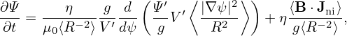
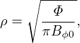
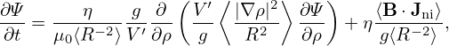
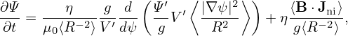
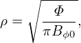
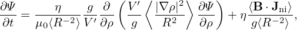

Assume magnetic surfaces of a magnetic conï¬guration are known and is given by
|
| (344) |
and
 | (345) |
where (r,𝜃) are two parameters and r is magnetic surface label (i.e., ∂Ψ∕∂ğœƒ|r = 0). The above parametric equations specify a series of concentric-circular magnetic surfaces.
Assume the toroidal ï¬eld function g(r) = RBϕ is given. Then the toroidal magnetic ï¬eld is determined by Bϕ = g∕R. Further assume the safety factor proï¬le q(r) is given, then the magnetic ï¬eld is fully determined. Next, let us derive the explicit form of the poloidal magnetic ï¬eld Bp, which is given by
 | (346) |
which involves the poloidal magnetic flux Ψp. Therefore our task is to express the poloidal magnetic flux Ψp in terms of q and g. Using q(r) = dΨt∕dΨp, we obtain
dΨp =  dΨt, dΨt,
|
Integrate the above equation over r, we obtain
 | (347) |
which an be written as
|
| (348) |
where use has been made of Ψt = ∫ 0r ∫ −ππBϕrdrd𝜃. Using Bϕ = g∕R and R = R0 + r cos𝜃, the above equation is written
 | (349) |
Using maxima (an open-source computer algebra system), the above integration over 𜃠can be performed analytically, giving
 | (350) |
Using this, equation (349) is written as
 | (351) |
which can be simplified as
 | (352) |
This is what we want—the expression of the poloidal magnetic flux in terms of q and g. [Another way of obtaining Eq. (352) is to use Eq. (158), i.e.,
 | (353) |
where 𝒥 is the Jacobian of the (r,𝜃,ϕ) coordinates and is given by 𝒥 = R(R𝜃Zr −RrZ𝜃) = −Rr. Then Eq. (353) is simpliï¬ed as
 | (354) |
which, after being integrated over r, gives Eq. (352).]
Using Eq. (352), the poloidal magnetic ï¬eld in Eq. (346) is written as
[Using the formulas ∇r = − (Z𝜃
(Z𜃠−R𝜃
−R𜃠) and 𝒥 = R(R𝜃Zr −RrZ𝜃), where 𝒥 is the Jacobian of the
(r,𝜃,ϕ) coordinates, we obtain 𝒥 = −Rr and ∇r = cos𜃠+ sin𝜃, ∇ϕ = ∕R. Then Eq. (355) is
written as
) and 𝒥 = R(R𝜃Zr −RrZ𝜃), where 𝒥 is the Jacobian of the
(r,𝜃,ϕ) coordinates, we obtain 𝒥 = −Rr and ∇r = cos𜃠+ sin𝜃, ∇ϕ = ∕R. Then Eq. (355) is
written as
 | (356) |
This is the explicit form of the poloidal magnetic ï¬eld in terms of g and q. The magnitude of Bp is written as
 | (357) |
Note that both Bp and Bϕ depend on the poloidal angle 𝜃.]
I use Eq. (352) to compute the 2D data of Ψ (Ψ = Ψp∕2π) on the poloidal plane when creating a numerical G-eqdsk ï¬le for the above magnetic conï¬guration (Fortran code is at /home/yj/project_new/circular_configuration_with_q_given).
Assume that the poloidal plasma current is zero, then g(r) = RBϕ is a constant independent of r. This is always assumed by those authors who use concentric-circular conï¬guration but is seldom explicitly mentioned.